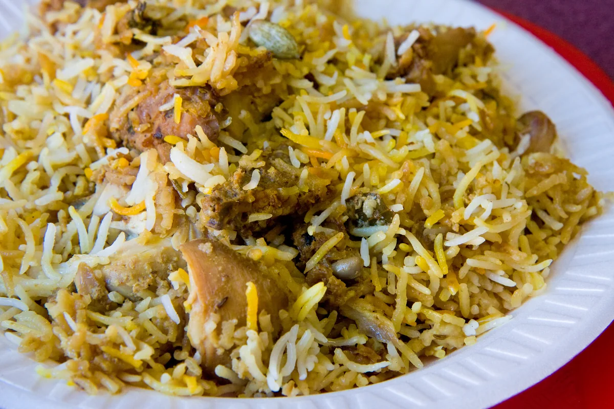
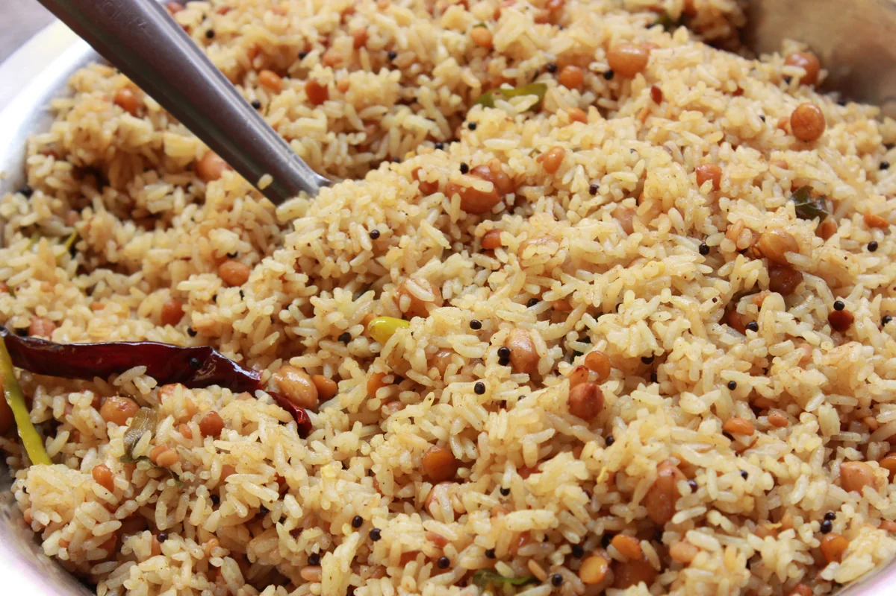
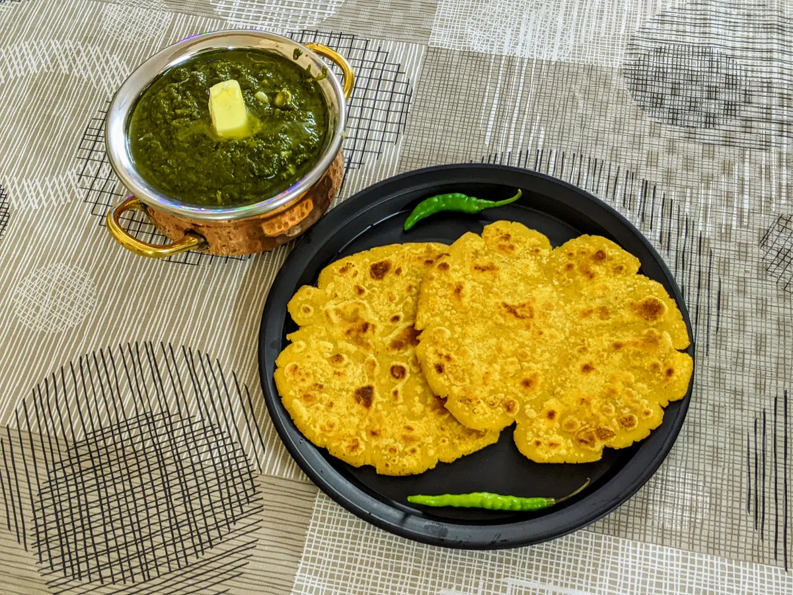
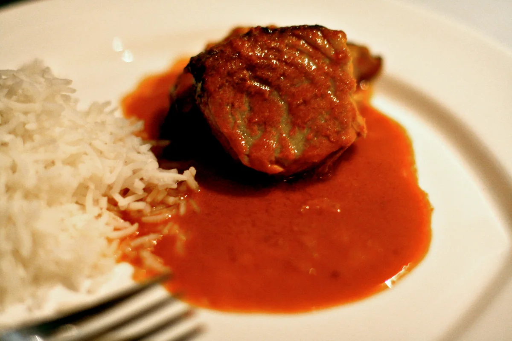

Experience Authentic Flavors From Every State
From the fragrant saffron dum of Telangana to the comforting sarson da saag of Punjab, journey through the authentic traditions, sacred spices, and ancestral recipes of 28 Indian States.

Hyderabadi Dum Biryani
Aromatic long-grain basmati layered with royal spices, saffron milk, and slow-cooked in a sealed dough vessel.
Signature Dishes Across Indian States
Every region brings centuries of agricultural wisdom, spice cultivation, and ancestral preparation methods.

Pulihora (Tamarind Rice)
Tangy tamarind-infused rice tempered with roasted peanuts, mustard seeds, curry leaves, and green chilies.

Makki di Roti & Sarson da Saag
Slow-simmered mustard greens with tender bathua leaves served with golden corn flatbread and fresh white butter.
Hyderabadi Dum Biryani
Royal long-grain basmati infused with saffron milk, whole garam masala, and fragrant herbs in slow sealed dum.

Goan Fish Curry
Coastal catch simmered in spiced fresh coconut milk, dried red Kashmiri chillies, and tangy dried kokum petals.
Sacred Spices of Indian Heritage
Centuries of culinary mastery rooted in protected indigenous botanicals, ancestral stone-ground temperings, and balancing Ayurvedic science.
Kashmiri Mongra Saffron
Prized globally for its intense crimson stigmas, exquisite floral honey aroma, and royal infusion into slow-simmered dum biryanis, rogan josh, and celebratory kheer.
Tellicherry Black Pepper
The ancient "Black Gold" that shaped global maritime spice trade. Sun-ripened extra-bold berries rich in piperine, offering pungent warmth and bright citrus undertones.
Guntur Sannam Chilli
Celebrated for its intense capsaicin kick and deep natural crimson pigment, this sun-dried pod forms the aromatic foundation of tangy podis, spicy curries, and lentil temperings.
Lakadong Golden Turmeric
World's most potent organic turmeric grown by Khasi tribal farmers in rich mountain humus. Unmatched natural curcumin delivers brilliant golden color and therapeutic immunity.
Coorg Green Cardamom
Hand-harvested in cloud-forested coffee estates of Kodagu. Plump, emerald green pods bursting with sweet cineole notes, cool camphor sweetness, and royal dessert fragrance.
Naga King Chilli (Bhut Jolokia)
Naturally smoked over tribal bamboo hearths, this sacred indigenous pepper imparts sweet dried fruit perfume initially, culminating in an awe-inspiring wave of primal heat.
Celebrating The Living Culinary Mosaic of India
Cibus preserves homestyle authenticity, honors indigenous regenerative farming, and shares the living family stories behind India's timeless recipes.
100% Indigenous Farm Produce
Unprocessed · Heirloom Seeds · Cold-PressedFrom stone-ground spices to mountain bamboo shoots and hand-pounded millets, our recipes celebrate genuine single-origin ingredients straight from soil to stove.
All 28 States & 6 Zones
Every Border · Every Region · Pan-Indian ArchiveA comprehensive geographical tour spanning North, South, East, West, Central, and Northeastern home kitchens. Every state is proudly honored with its quintessential dish.
Ancestral Kitchen Recipes
Grandmother Secret Ratios · Interactive TimersTested step-by-step masterclasses with exact gram measurements, precise tempering orders, and ancestral slow-cooking techniques to recreate heritage warmth at home.